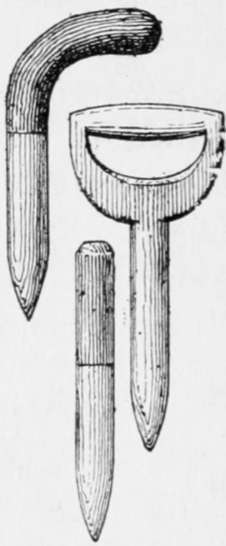

Implements
Description
This section is from the book "Culinary Herbs", by M. G. Kains. Also available from Amazon: Culinary Herbs, Their Cultivation, Harvesting, Curing and Uses.
Implements
When herbs are grown upon a commercial scale the implements needed will be the same as for general trucking-plows, harrows, weeder, etc.-to fit the soil for the hand tools. Much labor can be saved by using hand-wheel drills, cultivators, weeders and the other tools that have become so wonderfully popular within the past decade or two. Some typical kinds are shown in these pages. These implements are indispensable in keeping the surface soil loose and free from weeds, especially between the rows and even fairly close to the plants. In doing this they save an immense amount of labor and time, since they can be used with both hands and the muscles of the body with less exertion than the hoe and the rake require.
Nothing, however, can take the place of the hand tools for getting among and around the plants. The work that weeding entails is tiresome, but must be done if success is to crown one's efforts. While the plants are little some of the weeders may be used. Those with a blade or a series of blades are adapted for cutting weeds off close to the surface; those with prongs are useful only for making the soil loose closer to the plants than the rake dare be run by the average man. Hoes of various types are useful when the plants become somewhat larger or when one does not have the wheel cultivators. In all well-regulated gardens there should be a little liberal selection of the various wheel and hand tools.
Only one of the hand tools demands any special comment. Many gardeners like to use a dibble for transplanting. With this tool it is so easy to make a hole, and to press the soil against the plant dropped in that hole! But I believe that many of the failures in transplanting result from the improper use of this tool. Unless the dibble be properly operated the plant may be left suspended in a hole, the sides of which are more or less hard and impervious to the tiny, tender rootlets that strive to penetrate them. From my own observation of the use of this tool, I believe that the proper place for the dibble in the novice's garden is in the attic, side by side with the "unloaded" shotgun, where it may be viewed with apprehension.
In spite of this warning, if anyone is hardy enough to use a dibble, let him choose the flat style, not the round one. The proper way is to thrust the tool straight down, at right angles to the direction of the row, and press the soil back and forth with the flat side of the blade until a hole, say 2 or 3 inches across and 5 or 6 inches deep, has been formed. In the hole the plantlet should then be suspended so all the roots and a little of the stem beneath the surface will be covered when the soil is replaced. Replacing the soil is the important part of the operation. The dibble must now be thrust in the soil again, parallel and close to the hole, and the soil pushed over so the hole will be completely closed from bottom to top. Firming the soil completes the operation.
There is much less danger of leaving a hole with the flat than with the round dibble, which is almost sure to leave a hole beneath the plant. I remember having trouble with some lily plants which were not thriving. Supposing that insects were at the roots, I carefully drew the earth away from one side, and found that the earth had not been brought up carefully beneath the bulbs and that the roots were hanging 4 or 5 inches beneath the bulbs in the hole left by the dibble and not properly closed by the careless gardener.
Wooden Dibbles
I therefore warn every dibble user to be sure to crowd over the soil well, especially at the lower end of the hole. For my own part. I rely upon my hands. Digits existed long before dibbles and they are much more reliable. What matter if some soil sticks to them : it is not unresponsive to the wooing of water!
Continue to: